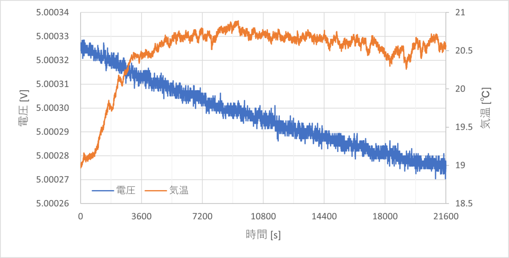

6.5桁表示のDMM（HP 34401A）を入手したところ、今まで使っていた自作電源たちの出力電圧の揺らぎが気になるようになってしまいました。
そこで34401Aの最終桁を止められるような高い安定度を持つ精密電源装置を作りました。
設計・回路図
基準電圧 IC の ADR4550 と、ゼロドリフトオペアンプの ADA4522 をつかった電源です。基準電圧源として使うことを想定しているため、0～5V、120mA
程度の小さな出力としています。出力は正電圧のみですが、完全な 0V を出力できるように内部には正負両電源を使っています。
オペアンプを利得
1倍で使い、出力電圧帰還用の分圧抵抗をなくしています。分圧抵抗を使うと、2つの抵抗の温度係数のマッチングがとれていなければ温度変化に弱くなってしまいます。そのような用途用の整合ペア抵抗は存在しますが高価です。
基準電圧 IC の ADR4550 は Bグレードのものを用いたので、±0.02% の初期出力電圧誤差と 2ppm/℃
の温度係数を得られます。はんだ付け時の熱や、基板のたわみによる応力で特性が悪化するので実装には注意が必要です。
RV2 の可変抵抗には BI Technologies の10回転ポテンショメータ、7274 を使用しています。最大出力電圧を 5V
としているので、バーニヤダイヤルの目盛りをちょうど半分にした値が出力電圧になります。
D7 は過電流保護が働いた時に Q5 が破壊することを防いでいます。定電流動作に移行した際にはオペアンプの出力電圧が電源電圧に張り付くので、Q5
のエミッタの電位はベースより低くなります。ツェナーダイオードを入れることでこの Vbe を制限しています。
U5 は、過電流保護が働いていることを示す LED を駆動しています。定電圧動作時ではフォトリレーの内部 LED にかかる電圧はほぼ 0V
なので消灯しています。しかし過電流保護動作時にはツェナーダイオードによる 4.7V がかかるのでフォトリレーを駆動することができます。
回路の実装、特に配線の引き回しには細心の注意が必要です。配線に含まれる抵抗成分は uV
オーダーの精度を必要とする回路にとって十分に大きいです。どのノードに電流が流れるのかを意識して配線することでこの影響をかなりキャンセルできます。
評価
8.5桁DMMであるKeithley 2002を使って短期間の出力電圧安定度を測定しました。ごく短い期間であれば10μVの桁まで静止していることが確認できます。
続いて、34401A を用いて長期間の変動を見てみました。

34401Aによる測定結果
5秒ごとに電圧と気温を 6時間分測定しました。電圧は気温がほぼ一定に保たれているのにも関わらず小さくなっていく傾向にあります。1時間でおよそ 10uV (5Vに対しての 2ppm)
下がっています。これは ADR4550 の日本語版参考資料 (Rev. 0) 中、長時間出力電圧ドリフトのグラフ (図32) の特性が表れたものと考えています。この資料や英語版データシート
(Rev. D) から、さらに時間を経過させれば出力電圧は上昇傾向に転じていくと考えられます。
最後に定電流動作への移行を確認しました。出力電流は 148mA で制限され、LED が赤色に変わります。

定電流動作への移行